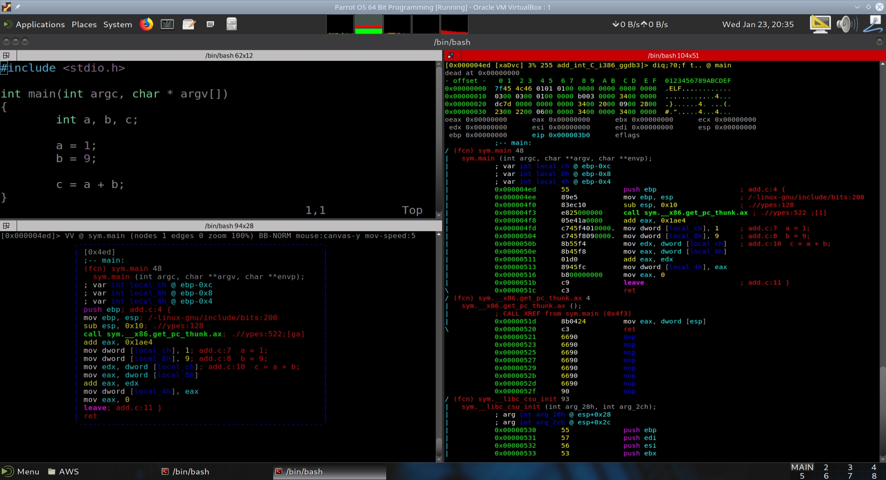

Adding Integers: i386#
{kind=link}
Introduction#
In this section we will examine the disassembly of a simple C program that adds two integers. The program is compiled for the i386 architecture, which is a 32-bit architecture commonly used in older computers and embedded systems. The disassembly will help us understand how the C code translates into assembly instructions, and how these instructions are executed by the CPU.
The C Program#
#include <stdio.h>
int main(int argc, char * argv[])
{
int a, b, c;
a = 1;
b = 9;
c = a + b;
}
Compilation of the C Program to Produce Assembly Code and Object Code#
The C program is compiled using the GCC compiler with the -m32 flag to specify the i386 architecture. The -S flag generates assembly code, and the -c flag compiles the assembly code into an object file.
gcc -m32 -S add_int.c -o add_int.s
gcc -m32 -c add_int.s -o add_int.o
Viewing the Assembly Code#
The assembly code is in Intel syntax, which is commonly used for x86 assembly language.
.file "add_int.c"
.text
.globl main
.type main, @function
main:
.LFB0:
.cfi_startproc
pushl %ebp
.cfi_def_cfa_offset 8
.cfi_offset 5, -8
movl %esp, %ebp
.cfi_def_cfa_register 5
subl $16, %esp
call __x86.get_pc_thunk.ax
addl $_GLOBAL_OFFSET_TABLE_, %eax
movl $1, -12(%ebp)
movl $9, -8(%ebp)
movl -12(%ebp), %edx
movl -8(%ebp), %eax
addl %edx, %eax
movl %eax, -4(%ebp)
movl $0, %eax
leave
.cfi_restore 5
.cfi_def_cfa 4, 4
ret
.cfi_endproc
.LFE0:
.size main, .-main
.section .text.__x86.get_pc_thunk.ax,"axG",@progbits,__x86.get_pc_thunk.ax,comdat
.globl __x86.get_pc_thunk.ax
.hidden __x86.get_pc_thunk.ax
.type __x86.get_pc_thunk.ax, @function
__x86.get_pc_thunk.ax:
.LFB1:
.cfi_startproc
movl (%esp), %eax
ret
.cfi_endproc
.LFE1:
.ident "GCC: (Ubuntu 7.3.0-27ubuntu1~18.04) 7.3.0"
.section .note.GNU-stack,"",@progbits
Explanation of the Assembly Code#
This assembly code represents the compiled output of a simple C program that adds two integers. Below is an explanation of the key sections and instructions:
Key Sections of the Assembly Code#
File and Function Metadata
.file "add_int.c" .text .globl main .type main, @function
.file "add_int.c": Indicates the source file name..text: Marks the beginning of the code (text) section where executable instructions are stored..globl main: Declares themainfunction as global, making it accessible to the linker..type main, @function: Specifies thatmainis a function.
Function Prologue
main: .LFB0: .cfi_startproc pushl %ebp .cfi_def_cfa_offset 8 .cfi_offset 5, -8 movl %esp, %ebp .cfi_def_cfa_register 5 subl $16, %esp
pushl %ebp: Saves the base pointer of the previous stack frame.movl %esp, %ebp: Sets the base pointer (%ebp) to the current stack pointer (%esp), establishing a new stack frame.subl $16, %esp: Allocates 16 bytes of space on the stack for local variables.
Global Offset Table Setup
call __x86.get_pc_thunk.ax addl $_GLOBAL_OFFSET_TABLE_, %eax
These instructions set up the Global Offset Table (GOT) for position-independent code. This is common in dynamically linked executables.
Variable Initialization
movl $1, -12(%ebp) movl $9, -8(%ebp)
movl $1, -12(%ebp): Stores the value1in the memory location at offset-12from the base pointer (%ebp).movl $9, -8(%ebp): Stores the value9in the memory location at offset-8from the base pointer.
Addition Operation
movl -12(%ebp), %edx movl -8(%ebp), %eax addl %edx, %eax movl %eax, -4(%ebp)
movl -12(%ebp), %edx: Loads the value at-12(%ebp)(1) into theedxregister.movl -8(%ebp), %eax: Loads the value at-8(%ebp)(9) into theeaxregister.addl %edx, %eax: Adds the value inedx(1) toeax(9), resulting in10.movl %eax, -4(%ebp): Stores the result (10) in the memory location at offset-4from the base pointer.
Return Value Setup
movl $0, %eax
Sets the return value of the
mainfunction to0(indicating successful execution).
Function Epilogue
leave .cfi_restore 5 .cfi_def_cfa 4, 4 ret
leave: Restores the previous stack frame by resetting%espand%ebp.ret: Returns control to the caller.
Helper Function: __x86.get_pc_thunk.ax#
__x86.get_pc_thunk.ax:
.LFB1:
.cfi_startproc
movl (%esp), %eax
ret
.cfi_endproc
This function retrieves the program counter (PC) for position-independent code. It moves the value at the top of the stack (
%esp) into theeaxregister and returns.
Additional Metadata#
.ident "GCC: (Ubuntu 7.3.0-27ubuntu1~18.04) 7.3.0"
.section .note.GNU-stack,"",@progbits
.ident: Compiler version information..section .note.GNU-stack: Marks the stack as non-executable for security purposes.
Summary#
This assembly code corresponds to a C program that:
Initializes two integers (
1and9).Adds them together.
Stores the result (
10) in memory.Returns
0to indicate successful execution.
The assembly code includes standard function prologue and epilogue, as well as setup for position-independent code.
Compilation to Produce Executable Code#
The object file is linked to create an executable file using the -o flag.
gcc -m32 add_int.o -o add_int_C_i386
Disassembly of the Executable Code#
The executable file is disassembled using the objdump command with the -d flag to display the disassembly.
objdump -x -D -s -t -Mintel add_int.o > objdump_of_dot_o.txt
objdump -x -D -s -t -Mintel add_int_C_i386 > objdump_of_dot_exe.txt
Explanation of the Switches used in the objdump command:#
-x: Displays all headers.-D: Disassembles all sections.-s: Displays the full contents of all sections.-t: Displays the symbol table.-Mintel: Specifies Intel syntax for disassembly.
Viewing the Object File Disassembly#
add_int.o: file format elf32-i386
add_int.o
architecture: i386, flags 0x00000011:
HAS_RELOC, HAS_SYMS
start address 0x00000000
Sections:
Idx Name Size VMA LMA File off Algn
0 .group 00000008 00000000 00000000 00000034 2**2
CONTENTS, READONLY, GROUP, LINK_ONCE_DISCARD
1 .text 00000030 00000000 00000000 0000003c 2**0
CONTENTS, ALLOC, LOAD, RELOC, READONLY, CODE
2 .data 00000000 00000000 00000000 0000006c 2**0
CONTENTS, ALLOC, LOAD, DATA
3 .bss 00000000 00000000 00000000 0000006c 2**0
ALLOC
4 .text.__x86.get_pc_thunk.ax 00000004 00000000 00000000 0000006c 2**0
CONTENTS, ALLOC, LOAD, READONLY, CODE
5 .comment 0000002b 00000000 00000000 00000070 2**0
CONTENTS, READONLY
6 .note.GNU-stack 00000000 00000000 00000000 0000009b 2**0
CONTENTS, READONLY
7 .eh_frame 0000004c 00000000 00000000 0000009c 2**2
CONTENTS, ALLOC, LOAD, RELOC, READONLY, DATA
SYMBOL TABLE:
00000000 l df *ABS* 00000000 add_int.c
00000000 l d .text 00000000 .text
00000000 l d .data 00000000 .data
00000000 l d .bss 00000000 .bss
00000000 l d .text.__x86.get_pc_thunk.ax 00000000 .text.__x86.get_pc_thunk.ax
00000000 l d .note.GNU-stack 00000000 .note.GNU-stack
00000000 l d .eh_frame 00000000 .eh_frame
00000000 l d .comment 00000000 .comment
00000000 l d .group 00000000 .group
00000000 g F .text 00000030 main
00000000 g F .text.__x86.get_pc_thunk.ax 00000000 .hidden __x86.get_pc_thunk.ax
00000000 *UND* 00000000 _GLOBAL_OFFSET_TABLE_
Contents of section .group:
0000 01000000 06000000 ........
Contents of section .text:
0000 5589e583 ec10e8fc ffffff05 01000000 U...............
0010 c745f401 000000c7 45f80900 00008b55 .E......E......U
0020 f48b45f8 01d08945 fcb80000 0000c9c3 ..E....E........
Contents of section .text.__x86.get_pc_thunk.ax:
0000 8b0424c3 ..$.
Contents of section .comment:
0000 00474343 3a202855 62756e74 7520372e .GCC: (Ubuntu 7.
0010 332e302d 32377562 756e7475 317e3138 3.0-27ubuntu1~18
0020 2e303429 20372e33 2e3000 .04) 7.3.0.
Contents of section .eh_frame:
0000 14000000 00000000 017a5200 017c0801 .........zR..|..
0010 1b0c0404 88010000 1c000000 1c000000 ................
0020 00000000 30000000 00410e08 8502420d ....0....A....B.
0030 056cc50c 04040000 10000000 3c000000 .l..........<...
0040 00000000 04000000 00000000 ............
Disassembly of section .group:
00000000 <.group>:
0: 01 00 add DWORD PTR [eax],eax
2: 00 00 add BYTE PTR [eax],al
4: 06 push es
5: 00 00 add BYTE PTR [eax],al
...
Disassembly of section .text:
00000000 <main>:
0: 55 push ebp
1: 89 e5 mov ebp,esp
3: 83 ec 10 sub esp,0x10
6: e8 fc ff ff ff call 7 <main+0x7>
7: R_386_PC32 __x86.get_pc_thunk.ax
b: 05 01 00 00 00 add eax,0x1
c: R_386_GOTPC _GLOBAL_OFFSET_TABLE_
10: c7 45 f4 01 00 00 00 mov DWORD PTR [ebp-0xc],0x1
17: c7 45 f8 09 00 00 00 mov DWORD PTR [ebp-0x8],0x9
1e: 8b 55 f4 mov edx,DWORD PTR [ebp-0xc]
21: 8b 45 f8 mov eax,DWORD PTR [ebp-0x8]
24: 01 d0 add eax,edx
26: 89 45 fc mov DWORD PTR [ebp-0x4],eax
29: b8 00 00 00 00 mov eax,0x0
2e: c9 leave
2f: c3 ret
Disassembly of section .text.__x86.get_pc_thunk.ax:
00000000 <__x86.get_pc_thunk.ax>:
0: 8b 04 24 mov eax,DWORD PTR [esp]
3: c3 ret
Disassembly of section .comment:
00000000 <.comment>:
0: 00 47 43 add BYTE PTR [edi+0x43],al
3: 43 inc ebx
4: 3a 20 cmp ah,BYTE PTR [eax]
6: 28 55 62 sub BYTE PTR [ebp+0x62],dl
9: 75 6e jne 79 <main+0x79>
b: 74 75 je 82 <main+0x82>
d: 20 37 and BYTE PTR [edi],dh
f: 2e 33 2e xor ebp,DWORD PTR cs:[esi]
12: 30 2d 32 37 75 62 xor BYTE PTR ds:0x62753732,ch
18: 75 6e jne 88 <main+0x88>
1a: 74 75 je 91 <main+0x91>
1c: 31 7e 31 xor DWORD PTR [esi+0x31],edi
1f: 38 2e cmp BYTE PTR [esi],ch
21: 30 34 29 xor BYTE PTR [ecx+ebp*1],dh
24: 20 37 and BYTE PTR [edi],dh
26: 2e 33 2e xor ebp,DWORD PTR cs:[esi]
29: 30 00 xor BYTE PTR [eax],al
Disassembly of section .eh_frame:
00000000 <.eh_frame>:
0: 14 00 adc al,0x0
2: 00 00 add BYTE PTR [eax],al
4: 00 00 add BYTE PTR [eax],al
6: 00 00 add BYTE PTR [eax],al
8: 01 7a 52 add DWORD PTR [edx+0x52],edi
b: 00 01 add BYTE PTR [ecx],al
d: 7c 08 jl 17 <.eh_frame+0x17>
f: 01 1b add DWORD PTR [ebx],ebx
11: 0c 04 or al,0x4
13: 04 88 add al,0x88
15: 01 00 add DWORD PTR [eax],eax
17: 00 1c 00 add BYTE PTR [eax+eax*1],bl
1a: 00 00 add BYTE PTR [eax],al
1c: 1c 00 sbb al,0x0
1e: 00 00 add BYTE PTR [eax],al
20: 00 00 add BYTE PTR [eax],al
20: R_386_PC32 .text
22: 00 00 add BYTE PTR [eax],al
24: 30 00 xor BYTE PTR [eax],al
26: 00 00 add BYTE PTR [eax],al
28: 00 41 0e add BYTE PTR [ecx+0xe],al
2b: 08 85 02 42 0d 05 or BYTE PTR [ebp+0x50d4202],al
31: 6c ins BYTE PTR es:[edi],dx
32: c5 0c 04 lds ecx,FWORD PTR [esp+eax*1]
35: 04 00 add al,0x0
37: 00 10 add BYTE PTR [eax],dl
39: 00 00 add BYTE PTR [eax],al
3b: 00 3c 00 add BYTE PTR [eax+eax*1],bh
3e: 00 00 add BYTE PTR [eax],al
40: 00 00 add BYTE PTR [eax],al
40: R_386_PC32 .text.__x86.get_pc_thunk.ax
42: 00 00 add BYTE PTR [eax],al
44: 04 00 add al,0x0
46: 00 00 add BYTE PTR [eax],al
48: 00 00 add BYTE PTR [eax],al
...
Explanation the Object File Disassembly#
This object code disassembly represents the compiled output of a C program for the i386 architecture. Below is an explanation of the key sections and their significance:
File Metadata#
add_int.o: file format elf32-i386
architecture: i386, flags 0x00000011:
HAS_RELOC, HAS_SYMS
start address 0x00000000
File format:
elf32-i386indicates the ELF (Executable and Linkable Format) for the 32-bit i386 architecture.Flags:
HAS_RELOC: The file contains relocation entries.HAS_SYMS: The file contains a symbol table.
Start address: The starting address of the program is
0x00000000.
Sections#
The disassembly lists various sections in the object file, each serving a specific purpose:
.groupContains metadata for grouping related sections.
Flags:
CONTENTS, READONLY, GROUP, LINK_ONCE_DISCARD.
.textContains the executable code (instructions).
Flags:
CONTENTS, ALLOC, LOAD, RELOC, READONLY, CODE.
.dataContains initialized global and static variables.
Flags:
CONTENTS, ALLOC, LOAD, DATA.
.bssContains uninitialized global and static variables.
Flags:
ALLOC.
.text.__x86.get_pc_thunk.axContains helper code for position-independent code (PIC).
Flags:
CONTENTS, ALLOC, LOAD, READONLY, CODE.
.commentContains compiler version information.
Flags:
CONTENTS, READONLY.
.note.GNU-stackMarks the stack as non-executable for security purposes.
Flags:
CONTENTS, READONLY.
.eh_frameContains exception handling information for stack unwinding.
Flags:
CONTENTS, ALLOC, LOAD, RELOC, READONLY, DATA.
Symbol Table#
The symbol table lists symbols (functions, variables, and sections) in the object file:
00000000 g F .text 00000030 main
00000000 g F .text.__x86.get_pc_thunk.ax 00000000 .hidden __x86.get_pc_thunk.ax
00000000 *UND* 00000000 _GLOBAL_OFFSET_TABLE_
main: The main function is defined in the.textsection and has a size of0x30bytes.__x86.get_pc_thunk.ax: A helper function for position-independent code._GLOBAL_OFFSET_TABLE_: An undefined symbol used for dynamic linking.
Disassembly of .text Section#
This section contains the main function’s instructions:
00000000 <main>:
0: 55 push ebp
1: 89 e5 mov ebp,esp
3: 83 ec 10 sub esp,0x10
6: e8 fc ff ff ff call 7 <main+0x7>
7: R_386_PC32 __x86.get_pc_thunk.ax
b: 05 01 00 00 00 add eax,0x1
c: R_386_GOTPC _GLOBAL_OFFSET_TABLE_
10: c7 45 f4 01 00 00 00 mov DWORD PTR [ebp-0xc],0x1
17: c7 45 f8 09 00 00 00 mov DWORD PTR [ebp-0x8],0x9
1e: 8b 55 f4 mov edx,DWORD PTR [ebp-0xc]
21: 8b 45 f8 mov eax,DWORD PTR [ebp-0x8]
24: 01 d0 add eax,edx
26: 89 45 fc mov DWORD PTR [ebp-0x4],eax
29: b8 00 00 00 00 mov eax,0x0
2e: c9 leave
2f: c3 ret
Prologue:
push ebp: Saves the base pointer of the previous stack frame.mov ebp, esp: Sets up the current stack frame.sub esp, 0x10: Allocates 16 bytes for local variables.
Position-Independent Code Setup:
call __x86.get_pc_thunk.ax: Calls a helper function to get the program counter.add eax, _GLOBAL_OFFSET_TABLE_: Adjusts the program counter for the Global Offset Table (GOT).
Variable Initialization:
mov DWORD PTR [ebp-0xc], 0x1: Stores1in the local variable at-0xc.mov DWORD PTR [ebp-0x8], 0x9: Stores9in the local variable at-0x8.
Addition:
mov edx, DWORD PTR [ebp-0xc]: Loads the first variable (1) intoedx.mov eax, DWORD PTR [ebp-0x8]: Loads the second variable (9) intoeax.add eax, edx: Addsedxtoeax(result:10).mov DWORD PTR [ebp-0x4], eax: Stores the result (10) in the local variable at-0x4.
Return Value:
mov eax, 0x0: Sets the return value to0.leave: Restores the previous stack frame.ret: Returns control to the caller.
Disassembly of .text.__x86.get_pc_thunk.ax#
This helper function retrieves the program counter for position-independent code:
00000000 <__x86.get_pc_thunk.ax>:
0: 8b 04 24 mov eax,DWORD PTR [esp]
3: c3 ret
mov eax, DWORD PTR [esp]: Loads the return address (program counter) intoeax.ret: Returns to the caller.
Disassembly of .comment#
Contains metadata about the compiler:
00000000 <.comment>:
0: 00 47 43 add BYTE PTR [edi+0x43],al
...
This section is not executable and contains the string
GCC: (Ubuntu 7.3.0-27ubuntu1~18.04) 7.3.0.
Disassembly of .eh_frame#
Contains exception handling information for stack unwinding:
00000000 <.eh_frame>:
0: 14 00 adc al,0x0
...
This section is used by the runtime for exception handling and debugging.
Summary#
This object file disassembly shows:
Code Structure: The
.textsection contains the main function and helper code for position-independent execution.Relocation: The GOT setup ensures compatibility with dynamically linked libraries.
Metadata: Sections like
.commentand.eh_frameprovide additional information for debugging and exception handling.
Project Code on GitHub#
Project code and resources can be found on my GitHub repository:
GitHub